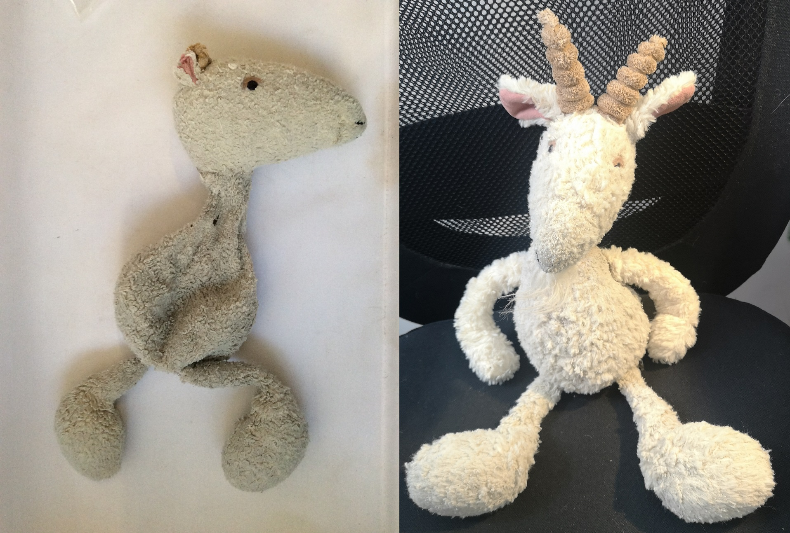
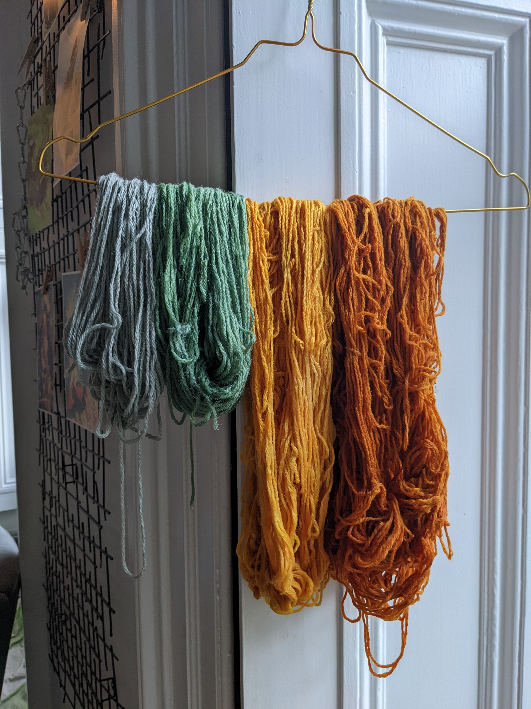
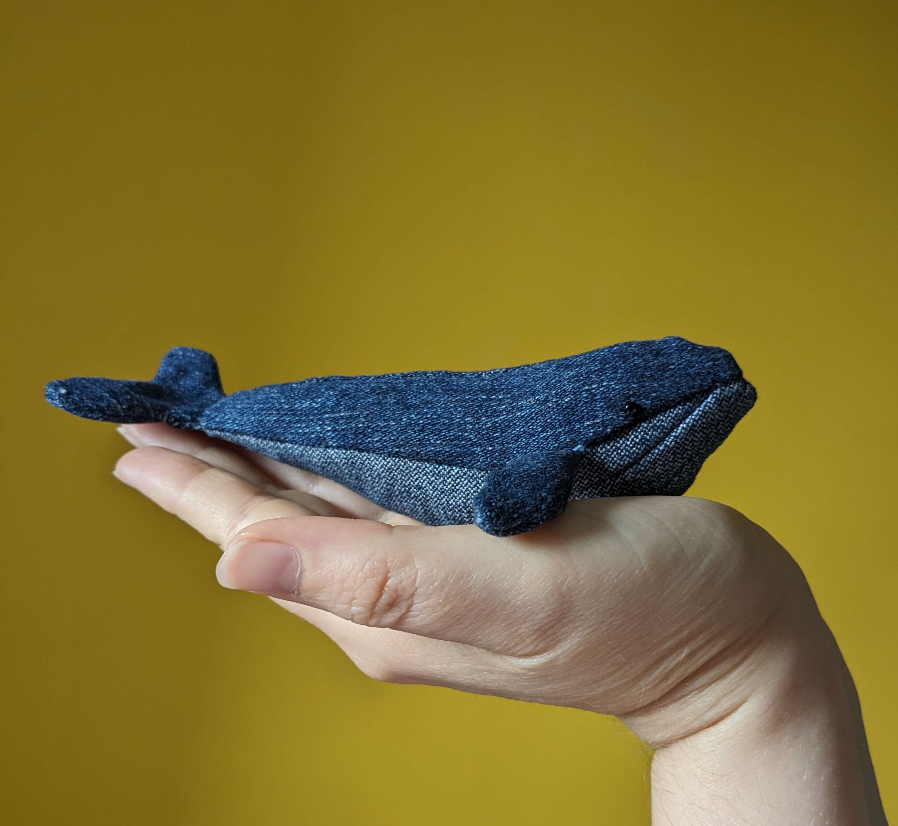

About Me
I'm a programmer and textile artisan based in Scotland. I also have a postgraduate degree in Medieval Literature, which influences my practice occasionally.
Hire me to make you a website, mend your coat, or tell you medieval facts!
I currently work as a part-time toy restoration expert, bringing old beloved teddies and dolls back to life, as well as a freelance artist teaching and selling a variety of textile crafts from spinning to machine knitting.
Some textile stuff I do
- Teddy Restoration: Expert invisible repair and restoration of modern and vintage soft toys, including specialist materials
- Dyeing: Natural and chemical methods of dyeing, exploring historical recipes and local nature
- Sewing & mending: Encouraging sustainability in textiles, making your clothes last and using castoffs for new art



Some coding stuff I do
- Goblin Market: A tiny, textbased RPG about finding all the items on your shopping list at a magical market, made in Python
- Garden Planner: A basic web-based tool to plan a planting layout and to get a month by month to do list